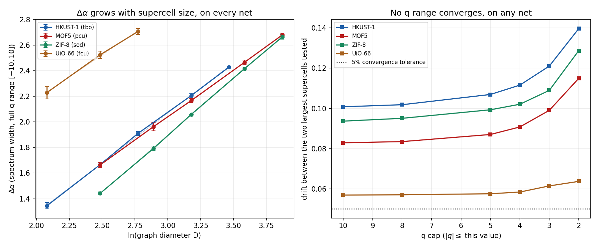
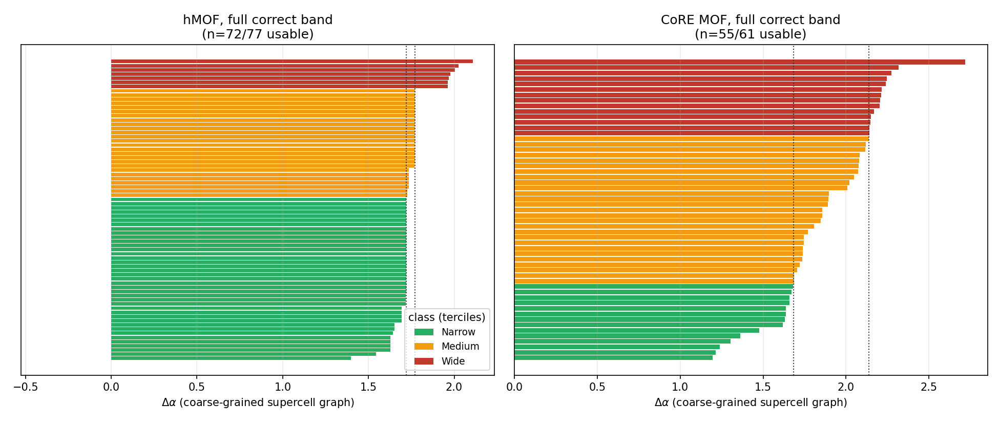
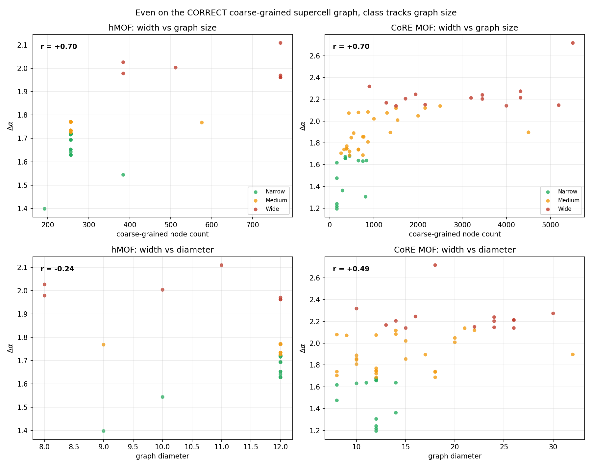
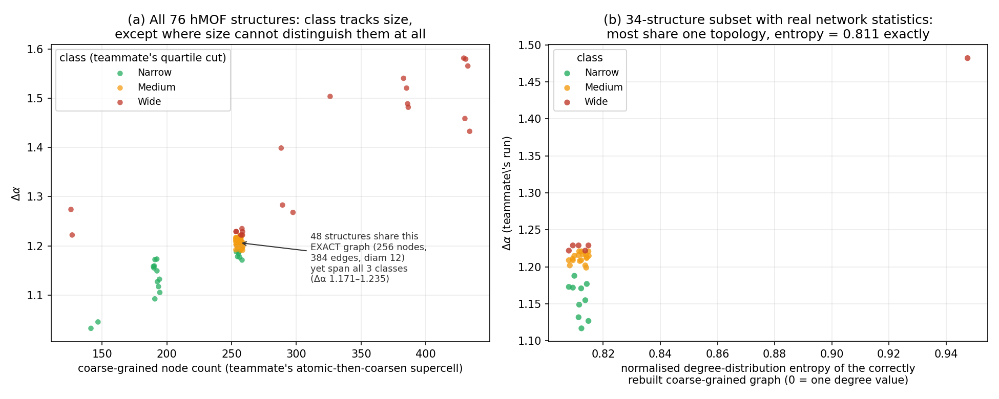
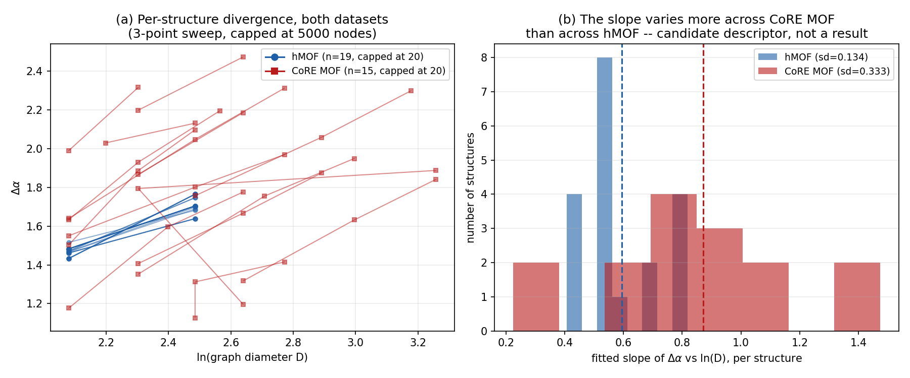

1The Band — 77 Frameworks
- You know
- How one framework becomes three numbers.
- This section
- Runs that calculation over 77 frameworks and looks for structure in the answers — then spends most of its length trying to prove the structure is an artefact, including one check that succeeded.
- Which lets us
- Say what the descriptor establishes, and what it cost us to find out.
Reason 1: the wrong graph was measured. This site describes the spectrum as computed on the coarse-grained building-block graph. The 77-framework band on this page and the 61-framework real-MOF band referenced later were in fact both computed by running the analysis on the atomic supercell bond graph — coarse-graining only supplied the node/linker counts. An atomic MOF graph has two length scales: molecular, inside one linker or metal cluster, and framework, above one linker length. Fitting a single power law across that crossover, as both notebooks did, is not a valid scaling measurement regardless of how large the graph is.
Reason 2: on the graph the site actually describes, the descriptor still does not converge. A finite-size test on the coarse-grained quotient graph (
2_python/code_12_converged_band.py, q_range_convergence()) grew
the supercell of four demonstration frameworks — HKUST-1 (tbo), MOF-5 (pcu), ZIF-8
(sod) and UiO-66 (fcu) — and found Δα increasing at every graph diameter
tested, at every cap on the distortion exponent q from |q| ≤ 10 down to
|q| ≤ 2, with no plateau. The mechanism: at extreme q the partition
function is dominated by a single box, the smallest possible box is one vertex, and that
term grows with graph size without bound. Numbers and method:
see the repository,
CLAUDE.md and 2_python/code_12_converged_band.py.
Consequently: every Δα value published by this project is a function of the graph it was measured on, not of the framework it is attributed to, for both of the reasons above. This also explains the +0.62 correlation with graph size discussed below — it was not a confound contaminating the descriptor, it was the descriptor. Nothing here has been recomputed at a "converged" cap or a "correct" graph, because neither produces a value that has been shown to settle. The numbers below are kept, in full, so this conclusion is auditable rather than asserted — the same policy applied to the pore-size and four-structure withdrawals elsewhere on this page.

9_dataset/size_scaling/make_convergence_figure.py from
2_python/_run_size_scaling.py's output.
| Structure | Net | Slope, Δα vs ln(D) | R² | Diameter range tested |
| HKUST-1 | tbo | 0.782 | 0.999 | 8–32 |
| MOF-5 | pcu | 0.732 | 1.000 | 12–48 |
| ZIF-8 | sod | 0.886 | 1.000 | 12–48 |
| UiO-66 | fcu | 0.692 | 0.998 | 8–16 |
Δα itself, at every diameter tested, is plotted in the figure above — not repeated here as text.
hMOF-### — they come from the hypothetical MOF database: computer-generated candidate structures that have never been synthesised. The notebook requested CoREMOF 2019, which is experimental, but the server returned hMOF records and nothing verified it. A check was added so this cannot recur silently.
- Nothing here may be described as “experimental” or “real” — it is a computational screening library.
- Every one of the 77 has a Zn₄O node, so the set is effectively single-metal. It cannot support any claim about behaviour across different metals, including the zirconium question.
- What it is genuinely good for: one node type with many different linkers — a clean same-node, varied-linker family.
A band is the range of spectrum width Δα that a group of frameworks shares, so a new framework can be tested for membership. Scaling this to 77 frameworks exposed an error in how we were computing the spectrum, which is now fixed — and revealed that the band cannot yet be read as a chemical statement. Both are set out here.
The fix — the spectrum now has the right shape
A multifractal spectrum f(α) must be an inverted parabola whose peak sits at q = 0, where f(α0) = D0, the fractal dimension. Ours sloped downhill instead — a mathematics problem, not a materials result. With the corrected τ, all 77 frameworks now peak at q = 0.
The paper defines the mass exponent as a ratio:
Over several radii that is a straight-line fit through the origin — the relation 𝒫q ~ (r/rN)τ carries no prefactor. Our code used np.polyfit(x, y, 1) and took the slope, which is a fit with a free intercept. At q = 0 that difference is fatal:
- at q = 0 every term is
pr_i^0 = 1, so 𝒫0 = |I|, the count of influential nodes; - that count is identical at every radius, so the free-intercept fit sees a flat line;
- a flat line has slope zero, so τ(0) = 0, so f(α0) = 0·α − 0 = 0.
The peak is pinned to zero and the parabola disappears. Measured across the dataset: τ(0) = 0 and f(0) = 0 in all 77 frameworks, and not one of them peaked at q = 0. With the paper's definition ln(r/rN) < 0, so τ(0) = ln|I| / negative < 0 and f(α0) = −τ(0) > 0 — the peak returns.
| τ definition | τ(0) | f(0) | peak at | inverted parabola? |
| free-intercept slope (ours) | 0.0000 | 0.0000 | q = −4 | no |
| paper: ln 𝒫q⁄ln(r⁄rN) | −3.5028 | +3.5028 | q = 0 | yes |
inmfa(..., tau_mode="paper"), now the default. tau_mode="slope" reproduces the old behaviour so the correction can be demonstrated rather than asserted.
What the band does — and does not — mean
All 77 spectra land in a tight band. The question is whether that band is telling us about chemistry. With published pore diameters available, it can be tested directly — and the answer is no, not yet.
The figure the notebook produces, read panel by panel
This is the project’s principal result on hypothetical frameworks, and every later comparison is made against it. It is worth a minute of attention, because four of its five panels exist to attack the finding in the first one.

(b) The band. The same 77 widths, sorted, each with its own uncertainty bar. The shaded strip is where the middle half fall: Δα = 1.11–1.25. Colour is atom count — and it runs dark to light almost in step with the sorted order, which is the clue panel (d) follows up.
(c) The finding that looked exciting. Width against pore diameter, sloping down at r = −0.497. Read alone this says narrow-pored frameworks are more heterogeneous — a publishable-sounding claim.
(d) The finding that was actually there. The same widths against atom count, at r = +0.730 — a stronger relationship than (c). Bigger graph, wider spectrum. That is a property of the calculation, not of the chemistry.
(e) Which of the two survives. Hold graph size constant and the pore correlation collapses from −0.50 to +0.10. Hold pore size constant and the size correlation barely moves, +0.73 to +0.62. The pore-size claim was graph size wearing a disguise.
What this leaves standing
- The mathematics of the spectrum is implemented correctly. τ(q) matches the paper's definition, the spectrum is a proper inverted parabola, and α0, the asymmetry A and D(q) are meaningful quantities for the first time — this is a real fix and stands independently of which graph the spectrum is taken on.
- The band, as reported here, was computed on the wrong graph and has not converged even on the right one. The 77-framework interquartile range is a real computed quantity, but it describes the atomic supercell graph the pipeline happened to build, at the size it happened to reach, not a settled property of the frameworks. See the corrected withdrawal notice above for both reasons.
- Δα is not a stability or gas-uptake predictor. The graph is unweighted; it does not encode which element an atom is.
- What would make the descriptor usable: first, running the analysis on the coarse-grained quotient graph as the site describes, rather than the atomic graph the published numbers actually used; then either a size-independent definition of Δα on that graph — not found by narrowing the q range, so some other normalisation would be needed — or reporting the Δα(D) growth curve itself as the descriptor, rather than a single number. None of this has been implemented; all of it is open work.
Finding and reporting a confound, and later a non-convergence, in one's own headline claim is a stronger position than presenting a number that has not been checked this way.
Source: mof_band_analysis.ipynb · data band_data.js · plotting band_page.js
2Reproduce Any Number on This Page
Everything here is computed live in your browser by mof_network.js. The Python counterpart produces identical results and can be run directly:
- You know
- The band, and the checks it survived.
- This section
- Gives the exact commands that regenerate every number above from a clean copy of the repository.
- Which lets us
- Verify the results rather than believe them.
→ coordination numbers, centralities and Laplacian spectra for all four structures
The Full, Correct Band: Both Datasets on the Coarse-Grained Supercell Graph
Everything above this point used the atomic graph by mistake. This section redoes the analysis on the graph the method actually calls for — the coarse-grained supercell — on the complete 77-framework hMOF set and the complete 61-framework CoRE MOF set, not a sample of either.
code_12_converged_band.py already enforces). One spectrum per structure,
one random seed, 20 box-covering trials — not the multi-seed average used for the
single-structure convergence figure earlier on this page, so there is no per-structure
error bar here to check the resulting classes against. That limitation is real and is
not hidden in what follows.

9_dataset/size_scaling/make_full_band_figure.py from
2_python/code_17_full_correct_band.py's output.
Does class membership track graph size here too?
The earlier finding on this page used a smaller sample and the wrong graph. Repeated on the full datasets, on the correct graph, the answer is the same.

The nine-way comparison, per class, both datasets
For each class, in each dataset: chemistry where it is available, graph features, degree statistics, edges, higher-order structure, assortativity, heterogeneity, and component count. Structural properties at the level of bond lengths and bond angles are not listed, because coarse-graining removes them from the graph by design — they cannot be read off a block-level vertex, whichever class it lands in.
| Category | hMOF (72 usable) | CoRE MOF (55 usable) | ||||
| Narrow (n=39) | Medium (n=26) | Wide (n=7) | Narrow (n=14) | Medium (n=27) | Wide (n=14) | |
| 1. Chemistry — metal | Zn (all) | Zn (all) | Zn (all) | not available — MOFX-DB did not supply a MOFid for this set | ||
| 1. Chemistry — net (from MOFid) | pcu (all identified) | pcu (all identified) | pcu (4/5 identified) | not available, same reason | ||
| 1. Chemistry — void fraction, LCD | 0.708, 9.28 Å | 0.705, 9.35 Å | 0.193, 3.61 Å | 0.735, 14.97 Å | 0.608, 9.36 Å | 0.544, 6.79 Å |
| 2. Features — unit-cell blocks | 4.0 | 4.2 | 9.7 | 33.4 | 23.3 | 53.4 |
| 2. Features — coarse-grained nodes, diameter | 258, 11.9 | 268, 11.9 | 622, 10.4 | 402, 11.5 | 1033, 14.4 | 3067, 20.6 |
| 3. Structural — bond lengths, angles | not observable on a coarse-grained graph, by design, in every class | |||||
| 4. Degree — mean (min–max) | 3.03 (2–6) | 3.06 (2–6) | 4.00 (3–6) | 3.57 (3–5) | 3.83 (3–5) | 3.53 (2–8) |
| 5. Edges (graph is unweighted) | 392 | 421 | 1143 | 761 | 1878 | 5072 |
| 6. Higher-order — average clustering | 0.0000 | 0.0000 | 0.0000 | 0.0352 | 0.0000 | 0.0028 |
| 7. Assortativity | −0.993 | −0.988 | −0.991 | −0.724 | −0.873 | −0.852 |
| 8. Heterogeneity — degree CV, entropy | 0.568, 0.821 | 0.572, 0.819 | 0.416, 0.618 | 0.305, 0.931 | 0.267, 0.690 | 0.467, 0.829 |
| 9. Connected components (mean, all = 1?) | 1.00, yes | 1.00, yes | 1.86, no | 1.57, no | 1.07, no | 1.14, no |
CoRE MOF: a clean, monotonic size gradient. Unit-cell block count, coarse-grained node count and diameter all increase from Narrow to Wide (block count is the one partial exception, 33→23→53, because the 48 Å sizing rule depends on the unit cell's own shape and not on block count alone). Void fraction and LCD fall the same way — larger graphs here also happen to have smaller pores, which is a real correlation in this sample but not one this table can attribute to size or to chemistry alone.
Row 9 is a genuine, separate finding, not a bug. Several classes average more than one connected component. A correctly replicated periodic quotient graph should always be one piece, so a count above 1 means the metal-oxo decomposition found blocks that are not actually joined to the periodic framework — almost always bound or included solvent molecules that the algorithm classified as small "linker" blocks. This is real, previously undocumented behaviour of the decomposition on real CoRE MOF structures, worth its own follow-up; it is reported here rather than filtered out silently.
Stated directly, category by category: what members of a class share, and what separates one class from the next
The same nine categories as the table above, read as a same/different verdict between classes rather than as raw numbers.
| Category | hMOF: Narrow vs Medium | hMOF: (Narrow, Medium) vs Wide | CoRE MOF: Narrow vs Medium vs Wide |
| 1. Chemistry | same | differs | not available for this dataset |
| metal, net | Zn, pcu in both | Zn, pcu in both — not the source of the split | MOFX-DB supplied no MOFid for CoRE MOF, so metal and net are unknown here |
| void fraction, LCD | 0.708 vs 0.705, 9.28 vs 9.35 Å — equal within noise | 0.19 vs 0.71, 3.6 vs 9.3 Å — a real difference, confounded with size below | falls monotonically class to class (0.735 → 0.608 → 0.544), confounded with size below |
| 2. Features (blocks, CG nodes, diameter) | same | differs | differs, monotonically |
| 4.0 vs 4.2 blocks, 258 vs 268 nodes, diam 11.9 both | 9.7 vs 4.0 blocks, 622 vs ~260 nodes — this is the actual split | 402 → 1033 → 3067 nodes, diam 11.5 → 14.4 → 20.6 — this is the actual split | |
| 3. Structural (bond, angle) | not observable on a coarse-grained graph, in any class, on either dataset — by design | ||
| 4. Degree (mean, min–max) | same | differs slightly | differs slightly, not monotonic |
| 3.03 vs 3.06 | 4.00 vs ~3.0 | 3.57 → 3.83 → 3.53 — Wide is not the highest | |
| 5. Edges (unweighted) | tracks node count | tracks node count | tracks node count |
| 6. Higher-order (clustering) | same (zero) | same (zero) | near-zero throughout, no clean trend |
| 7. Assortativity | same (−0.99) | same (−0.99) | differs (−0.72 to −0.87), roughly tracks size |
| 8. Heterogeneity (degree CV, entropy) | same | differs | differs, roughly tracks size |
| 9. Components | same (both exactly 1) | differs (Wide averages 1.86) | all classes above 1 — solvent inclusion, not class-specific |
Sub-Bands (Narrow/Medium/Wide), Second Route: A Teammate's Coarse-Grained Run
A teammate's separate coarse-grained run cut the 76-structure hMOF set into three classes — Narrow, Medium, Wide — by the 25th and 75th percentiles of Δα. This section checks what those labels actually track.
CLAUDE.md before this
analysis: the Medium class is 0.032 Δα wide against per-structure error bars of
0.013–0.098, and the run's own isomorphism check found hMOF-94 and hMOF-96 to be the
identical graph — yet they landed in different classes. This section generalises
that single observation to the whole sample.

CLAUDE.md) accounts for
48 of the 76 structures (63%) and spans all three classes: 36 Medium, 6
Wide, 6 Narrow, Δα ranging 1.171–1.235 within one identical graph. (b) On a
34-structure subset where this project rebuilt the correct coarse-grained quotient graph
independently (2_python/code_14_size_strata.py) and computed real network
statistics — degree mean, coefficient of variation, assortativity, clustering,
component count, degree-distribution entropy — 28 of the 34 give identical
values on every statistic (entropy 0.811 to three decimal places), because they are
the same graph. Generated by 2_python/_make_strata_figure.py.
| What | Finding |
| Distinct coarse-grained graph signatures (76 structures) | 14 |
| Signatures that are entirely one class | 13 of 14 |
| Structures in the one signature that is not one class | 48 of 76 (63%) |
| Class split within that one identical-graph group | 36 Medium, 6 Wide, 6 Narrow |
| Δα range within that one identical-graph group | 1.171–1.235 |
| Network statistics identical across 28/34 rebuilt structures | degree mean, CV, assortativity, clustering, component count, entropy — all to 3–4 decimal places |
A Topologically Diverse Comparison Set, and Why It Is Only Four Nets Wide
The degenerate hMOF sample above raises an obvious question: what would a genuinely diverse sample look like? This assembles one from what is available locally, spanning pcu, tbo, sod and fcu — and reports honestly why rht is missing.
| Structure | Net candidate | Source |
| HKUST-1 | tbo | demonstration set — published net |
| MOF-5 | pcu | demonstration set — published net |
| ZIF-8 | sod | demonstration set — published net |
| UiO-66 | fcu | demonstration set — published net |
| hMOF-0, hMOF-101 | pcu | hMOF pool — connectivity-signature candidate |
| (rht) | not found | no structure in the locally available sample matched an rht-net signature |
code_06 (writes a
.cgd file) fed to Systre, Java software not installed in this environment.
Absent that, structures here are classified by coordination signature — the
(node degree, linker degree) pair — which only resolves the four simple,
single-node-type nets already discussed on this site. It cannot recognise rht, which
typically combines two node connectivities in one framework, and it correctly refuses to
guess rather than mislabel: of 20 CoRE MOF structures classified this way, 8 had a
multi-connectivity signature this heuristic cannot resolve at all — real
chemical diversity the method cannot see, not necessarily rht, and not claimed to be.
Does the Divergence Slope Itself Vary Between Frameworks? A Proposal, Not a Result
The Methodology page lists reporting the Δα(D) growth slope as one of two ways forward once the width itself is known not to converge. This section takes a first, capped look at whether that slope actually differs between frameworks, using a smaller sample than the full analysis above — which it would have to differ, to be worth proposing.
2_python/code_15_dataset_sweeps.py reports each one).

9_dataset/size_scaling/make_slope_figure.py from
2_python/code_15_dataset_sweeps.py's output.
code_12 applies to one structure at a time, run
across many. This is a candidate worth pursuing, stated as one, not a second descriptor
to add to the withdrawn list above.
3The Same Analysis on Real, Synthesised MOFs
The band above is built from hypothetical frameworks — structures a computer proposed and nobody has ever made. This section runs the identical pipeline on sixty-one frameworks that exist, taken from CoRE MOF 2019, and asks whether the descriptor was describing materials or only one generator’s output.
- You know
- A band, measured on frameworks that only exist inside a computer.
- This section
- Repeats everything on 61 MOFs that have actually been synthesised, and asks whether the band transfers.
- Which lets us
- Decide whether any of this is about materials or only about one structure generator.
hMOF-### entries: chemically plausible, combinatorially
assembled, never synthesised. A band that only holds for one generator’s output is a
statement about that generator, not about matter. The only way to tell the difference is to run
the same code on structures that came out of a laboratory — enough of them to be a
distribution rather than an anecdote.

4_reference/make_real_band_figures.py.
The full real-MOF analysis, panel by panel
This is the exact counterpart of the 77-framework figure on the previous section, recomputed on structures that exist. It is laid out the same way on purpose: the same questions, asked again, of different material. If a result is real it should survive being asked twice.

(b) Forty of the 61 spectra overlaid. All the same family of shape, all overlapping. This is the band, before it is reduced to a number.
(c) The band itself. The 61 widths sorted low to high; the shaded strip is the middle half, 1.10–1.29. Compare it with the hypothetical set’s 1.11–1.25 in the previous section: nearly the same strip, from completely different material.
(d) The tempting correlation, again. Width against largest cavity diameter, r = −0.198. Weaker than the hypothetical set’s −0.497, but the same sign and the same story.
(e) And the real driver, again. Width against atom count, r = +0.511. Larger graphs give wider spectra here too.
(f) The same collapse. Controlling for size drops the pore correlation from −0.20 to +0.10, while size survives at +0.49. The confound that killed our pore-size claim on hypothetical structures behaves identically on real ones. That is the strongest evidence on this site that the confound analysis was correct: it was not a quirk of one dataset.
Generated by
3_notebooks/real_mof_band.ipynb, step 11.
We recorded a prediction before the run. It was wrong.
When this page carried only four synthesised structures, it set out the two readings consistent with the apparent gap and committed, in writing, to what a proper sample would show under each. That text is reproduced below unchanged, because a prediction is only worth something if you are held to it after the data arrives.
Reading 1 — the descriptor is working not supported
“Fifty CoRE MOF structures of matched graph size cluster around Δα ≈ 1.7–2.3, above the hMOF band, and split by metal or by underlying net. That would make the gap a real property of synthesised frameworks and the descriptor genuinely informative.”
Sixty-one arrived at 0.95–1.47, centred on 1.20. Nothing clustered at 1.7–2.3.
Reading 2 — four is not enough this is what happened
“They scatter broadly and overlap the hMOF band, showing that our four archetypes were unrepresentative. We would report that, withdraw the gap the way we withdrew the pore-size claim, and say so on this page.”
That is what this page now does. The gap is withdrawn above, with the reason it appeared.
4Both Bands, Stated Exactly — and What a Band Is Actually For
The word “band” has been used loosely on this page. Here it is pinned down: three different definitions, the numbers for each dataset under each, and an honest account of what such a band can and cannot be used for.
- You know
- That both sets of frameworks produce spectrum widths in the same region — and that both are withdrawn as structural findings.
- This section
- States each band precisely under three definitions, for the record, and sets out what a band of this kind could be used for if a converged version existed.
- Which lets us
- Say what this project would deliver if the descriptor were fixed, without pretending the numbers below are usable today.
First: “band” is three different claims
A range can be quoted as the full extent of the data, as the middle half, or as a central interval that discards the tails. They are not interchangeable, and quoting one while implying another is a standard way to overstate a result. All three are given below so the reader can pick.
| Dataset | n | Full range min – max |
Interquartile band the middle half |
Mean ± sd | Median | Mean asymmetry A |
| Hypothetical hMOF — computer-generated |
77 | 1.016 – 1.410 | 1.11 – 1.25 | 1.180 ± 0.095 | 1.197 | −1.31 |
| Synthesised CoRE MOF 2019 — real materials |
61 | 0.951 – 1.475 | 1.10 – 1.29 | 1.198 ± 0.132 | 1.214 | −1.31 |
| Combined | 138 | 0.951 – 1.475 | 1.10 – 1.26 | 1.188 ± 0.113 | 1.203 | −1.31 |
What a band is for — four uses, none of them currently supported
1. A null range not supported
You cannot call a framework “unusually heterogeneous” without knowing what usual is, and a band would supply that reference — if it were a property of the frameworks rather than of the graph it happened to be measured on. Since Δα drifts with supercell diameter without bound, there is no fixed “usual” to compare a new structure against; the answer would depend on how large a graph the new structure's pipeline run happened to build.
2. Pipeline quality control partially usable
A framework whose spectrum fails to compute at all, or whose linearity R² collapses, still flags a broken CIF or a disconnected supercell — that check does not depend on Δα being converged. But using a specific Δα range as the flag (as the 39 rejected structures in this run were) is not defensible until the range is defined at a fixed, stated graph size.
3. Transfer from cheap data to real materials not supported
The two bands coinciding was read as evidence that a rule calibrated on hMOFs applies to real MOFs. It is now understood as two copies of the same size-dependent artefact agreeing with each other — unsurprising, since both were computed the same way on graphs of overlapping size. This does not establish transfer.
4. Screening candidates not supported
The aspiration is to triage candidates before spending hours of simulation on them. That requires Δα to correlate with a property someone wants, and nothing here demonstrates that — and it requires Δα to be a fixed number for a given framework in the first place, which the convergence finding above shows it is not. This use was already unsupported before the withdrawal; the withdrawal removes any route to supporting it without a redefinition of the descriptor.
5How Those Sixty-One Frameworks Were Obtained
The route to real structures had to be rebuilt twice: once because the database returned the wrong records, and once because the service stopped returning records at all.
- You know
- That the two bands coincide.
- This section
- Explains where those 61 real structures came from, and the two separate failures that made getting them hard.
- Which lets us
- Judge the provenance of the data, which is the part most easily faked and least often shown.
The bug that made this necessary
The analysis notebook was always written to pull CoRE MOF 2019 — experimentally derived, solvent-removed crystal structures. It asked the MOFX-DB API for exactly that. What came back was hMOF records, and that is why every quantitative result in this project was, for months, computed on hypothetical frameworks.
The cause: on that endpoint the database= parameter is advisory, and when it is combined with a gases[] filter the gas filter wins. The request was correct; the response simply did not honour it. A provenance check further down the notebook caught the discrepancy and printed a warning — which is the only reason we know, rather than having published “experimental” results computed on generated structures.
database field rather than trusting the server —
began returning zero records. A query that returns nothing is at least honest, but it does not
produce a dataset.
10.5281/zenodo.3370236, downloaded by DOI rather than queried.
An archived record is immutable and citable: it is the same bytes for every reader, permanently,
which is a stronger provenance guarantee than any live endpoint can offer. Sampling is capped per
metal composition so that no single metal can dominate the set the way Zn dominated the 77.
The procedure, which ran unchanged
Every module from bond perception onward is written per-CIF and is indifferent to where the CIF came from. Moving from hypothetical to real structures required no change to the analysis — only to the source of the data. That is worth stating plainly, because it is the reason the two sets are comparable at all.